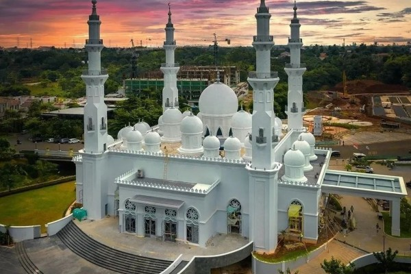
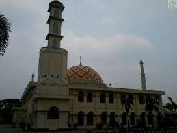

Daftar Masjid Kota Depok
Masjid Kubah Emas
Masjid Kubah Emas
Selain Shalat Berjama'ah, Masjid di Depok juga kerap kali dipakai untuk acara islami seperti mengaji harian, mingguan ataupun bulanan.
Masjid At Thohir

Kegiatan Masjid At Athohir
Selain Shalat Berjama'ah, Masjid di Depok juga kerap kali dipakai untuk acara islami seperti mengaji harian, mingguan ataupun bulanan.
Masjid At Athohir
Kegiatan Masjid At Athohir
Selain Shalat Berjama'ah, Masjid di Depok juga kerap kali dipakai untuk acara islami seperti mengaji harian, mingguan ataupun bulanan.
Masjid Agung Korps Brimob

Kegiatan Masjid At Athohir
Selain Shalat Berjama'ah, Masjid di Depok juga kerap kali dipakai untuk acara islami seperti mengaji harian, mingguan ataupun bulanan.
Masjid Agung Korps Brimbob
Kegiatan Masjid Agung Korps Brimob
Selain Shalat Berjama'ah, Masjid di Depok juga kerap kali dipakai untuk acara islami seperti mengaji harian, mingguan ataupun bulanan.